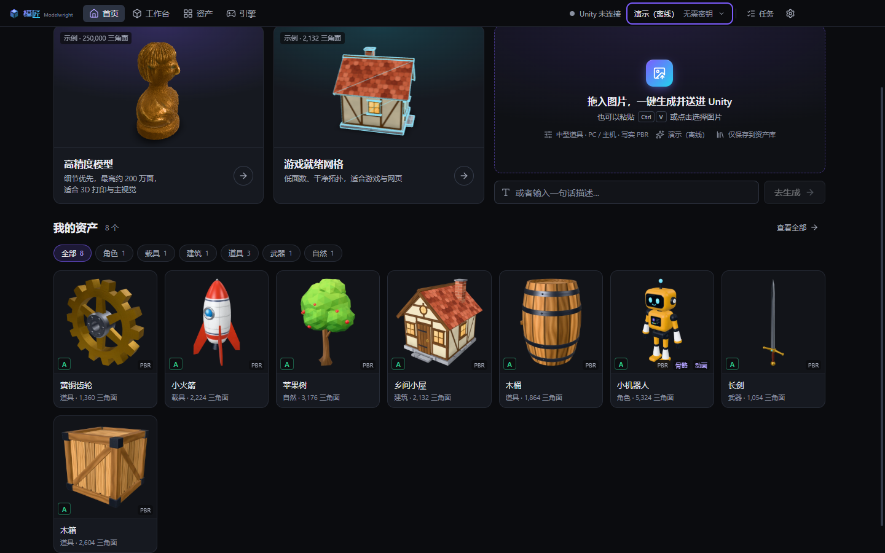
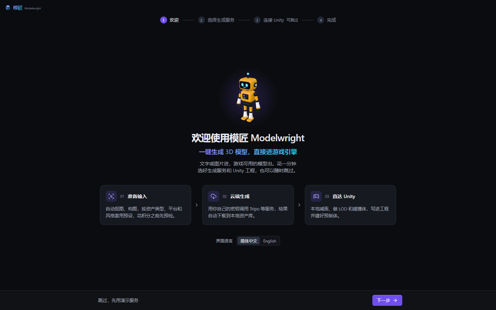
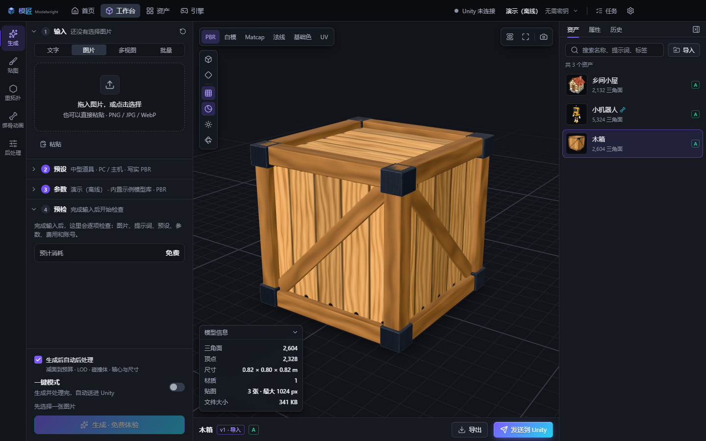
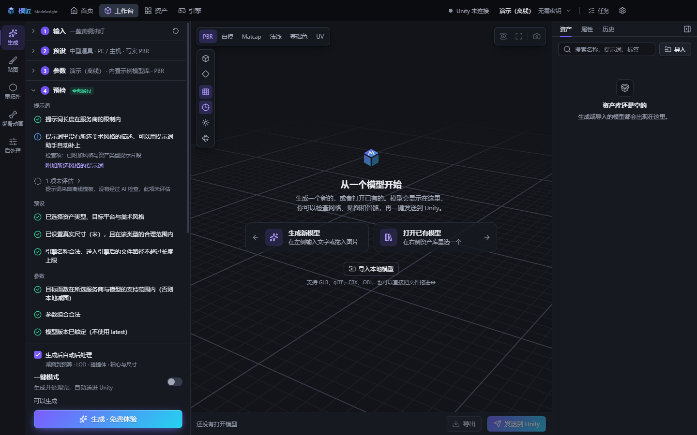
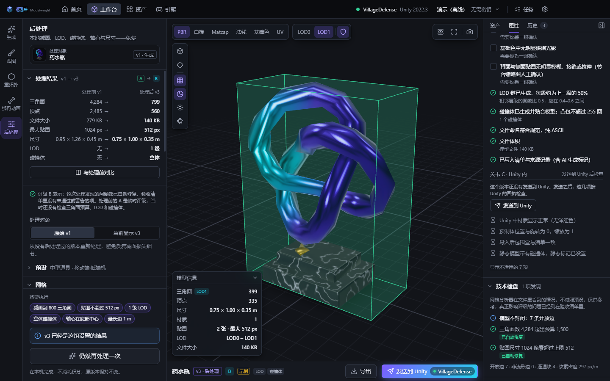
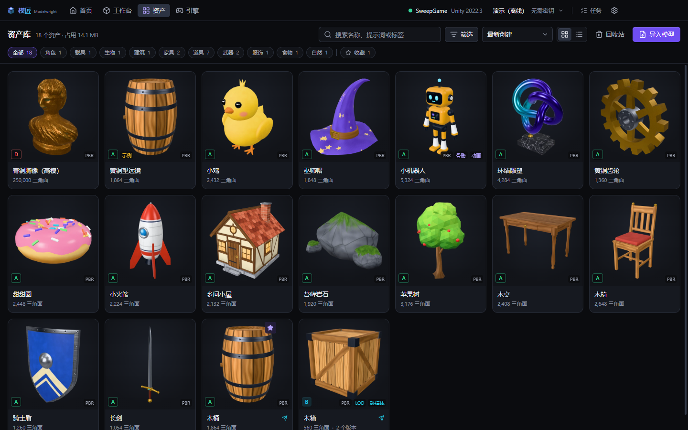
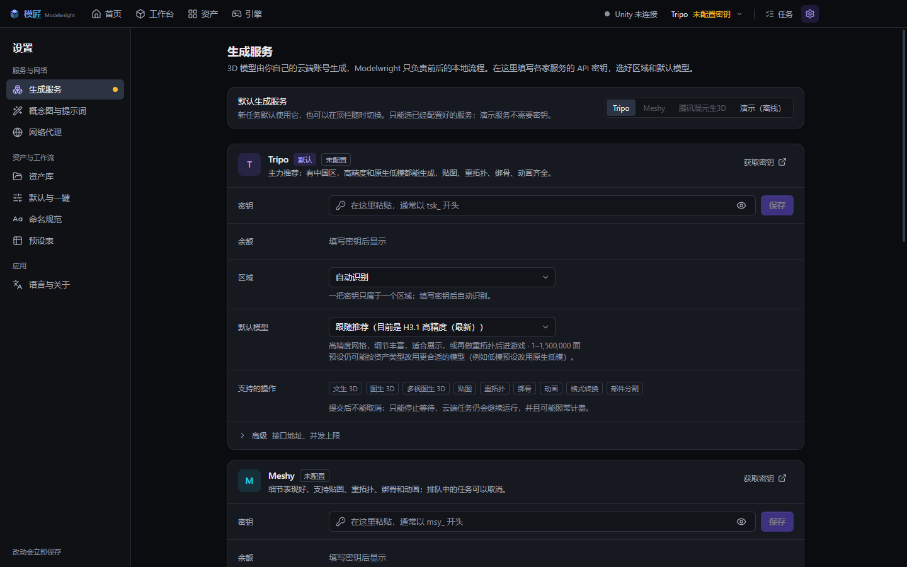

一键生成 3D 模型，直接进游戏引擎
文字或图片进，游戏可用的模型出——本地完成减面、LOD、碰撞体、轴心与尺寸，再直接送进你的 Unity 工程。生成由云端服务完成，用你自己的 API 密钥；本机不需要任何大模型权重。
Windows 10 / 11，64 位 · 安装版会自动更新 · 程序未签名，SmartScreen 提示时点「更多信息 → 仍要运行」 · SHA-256 见 Release 说明

云端生成之外的一切，都在本地做好
生成只是一步。模匠把这一步前后的工作做成一条流水线，每一步都能看、能改、能验收。
准备输入
图片自动抠图、构图、尺寸适配；拆分三视图 / 四视图设定图；提示词优化（离线模板或你自己的大模型）；可先出概念图再生成 3D；批量一行一个描述。
预设与预检
14 种资产类型 × 7 种目标平台 × 5 种风格，自动换算面数预算、贴图尺寸、LOD、碰撞体、轴心与真实尺寸；花积分之前逐项预检图片、提示词、参数、费用与余额。
云端生成
Tripo（中国区 / 国际区自动识别）、Meshy、腾讯混元生 3D，用你自己的密钥；内置离线演示服务，无需密钥即可走通整个流程。计费请求绝不自动重发。
本地后处理（免费）
减面到预算、LOD 链、碰撞体、轴心与尺寸校正、Unity 贴图打包；资产页可多选批量处理，一次把一批道具从 PC 预算改成移动端预算。
三道关卡验收
生成后、后处理后、导入 Unity 后各一道，给出 A–D 等级，每一项都说明问题和处理办法；Unity 那一关由插件回传的真实导入结果判定。
直达 Unity
一键写入工程的 Assets/Modelwright/；装了插件会自动建材质、带 LODGroup 与碰撞体的预制体并放进场景。桌面端和插件只走本机回环地址。
截图
界面为简体中文，可切换英文。






第一次使用
四步走通流程
- 打开应用进入引导：选择生成服务。还没有密钥就选 演示（离线）——返回内置示例模型（带「示例」标记），用来走通预设、预检、后处理、验收、送进 Unity。
- （可选）连接 Unity：应用会列出 Unity Hub / 团结 Hub 里的工程，也可以粘贴工程路径；点「安装插件」。
- 在首页把一张图片拖进「拖入图片，一键生成并送进 Unity」，或者输入一句话描述。
- 结果出现在首页和「资产」页；在「工作台」里查看网格、贴图、骨骼，做后处理、导出或发送到 Unity。
连接 Unity
支持 Unity 2022.3 LTS、团结引擎 1.x、Unity 6；Built-in / URP / HDRP。发送之后得到什么，取决于工程当时的状态：
| 工程状态 | 结果 |
|---|---|
| 已装插件，编辑器开着（已连接） | 立即导入：按渲染管线生成材质，做好带 LOD 和碰撞体的预制体，放进场景，并把导入结果回传，验收清单的「Unity 内」一关据此判定 |
| 已装插件，编辑器没开 | 文件先写进工程，下次打开或刷新时由插件完整导入（不放进场景，没有回执） |
| 没装插件 | 只写入文件到 Assets/Modelwright/，由 Unity 按默认方式导入，没有预制体 |
GLB 需要 glTF 导入器（glTFast）：工程里没有时，应用会让你选择「安装 glTFast（推荐）／云端转成 FBX／本地导出 OBJ」。带骨骼的模型在装了 glTFast 的工程里可以直接按 GLB 发送（Generic 骨架，不花积分）。
验证情况与已知限制
已验证
- 真实应用的自动化测试覆盖各个页面，另有七段完整的用户旅程和全部界面在两种窗口尺寸、两种语言下的巡检。
- 付费流程用本机模拟的接口逐请求计数：一次提交（包括双击、重试、批量）只发出应有的那些计费请求。
- 三个发布文件由同一份源码构建；安装目录和便携版通过自检（抠图引擎、网格管线、Draco 解码、第三方许可清单）。
- 用假密钥访问各服务商真实接口：地址、TLS、鉴权失败识别正确。
- Tripo 真实密钥（中国区）：图片生成成功；0.1.2 把「绑骨 → 动作」整条链逐项实测跑通——双足角色 v1.0 + 原生骨骼命名，idle / walk / run 等动作、多动作 FBX、原地播放全部成功，四足生物 v2.5 + 四足行走成功。
- Unity 6000.6.4f1 真实编辑器（2026-10-08）：编辑器开着时安装插件、装 glTFast、自动连接、发送 GLB、生成材质 / 预制体并放进场景、回传结果；发现的两个问题已在 0.1.1 修复。2026-10-09 用 0.1.2 发送带动作的角色：Humanoid Avatar 有效，Animator 自动配好 idle / walk / run 三个动作。
尚未验证
- Meshy、混元的真实生成：只对照公开文档实现并用模拟服务测试过。第一次请用少量积分试一次最便宜的生成。
- Unity 2022.3 与团结引擎：插件通过了离线编译检查，尚未在这两种真实编辑器里验收。
- 安装程序的卸载流程没有实际运行过；安装版已在 Windows 11 上实际安装并运行。
已知限制：仅 Windows；只完整支持 Unity；本地后处理不处理带骨骼的模型和只有 FBX 的版本；拼音转写的多音字与超长描述有取舍。完整说明见 README。